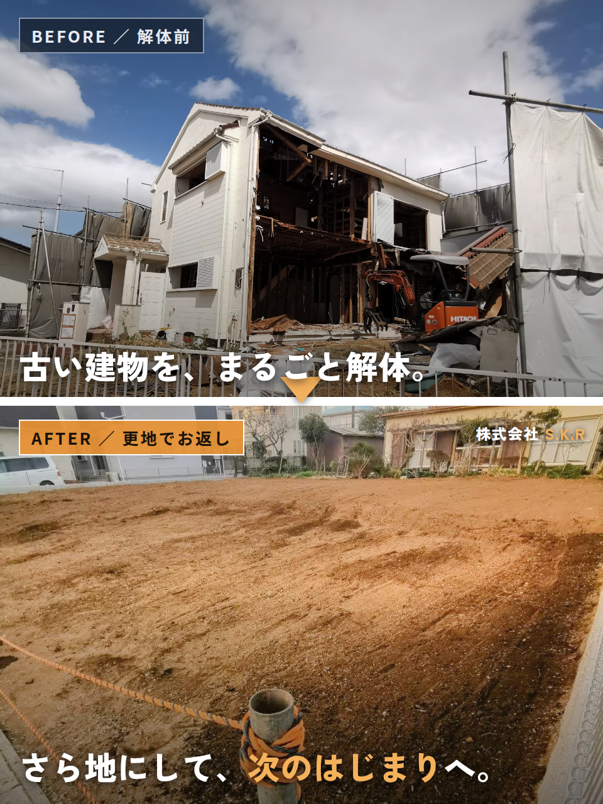
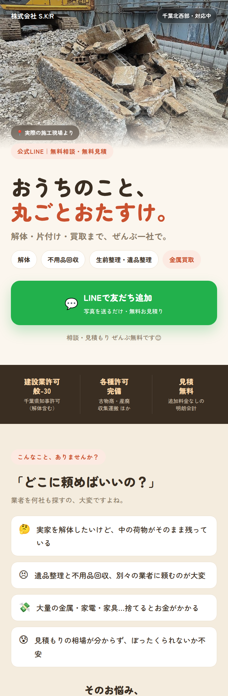
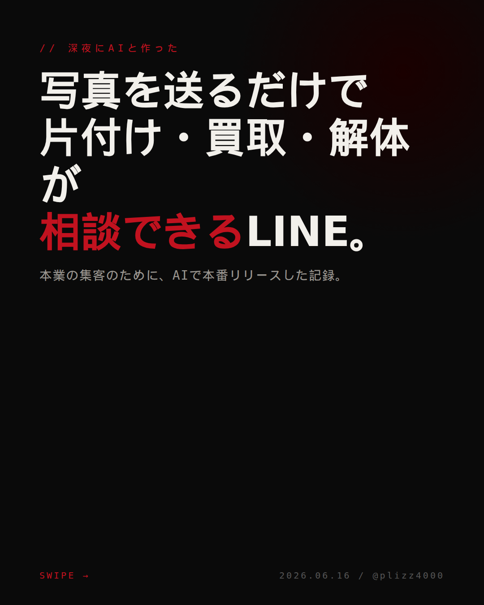

AIチーム
活動報告書
株式会社S.K.R 広報部門
2026年6月
Why — なぜこのチームがあるのか
AIで本業の
キャッシュフローを動かし
継続利益を出す
坂本の指示で動く24時間365日の業務支援体制
常に進化 — 坂本が試す → チームが学ぶ → 会社に還元
全データ社内完結・機密は外部に出さない設計
Who — 誰がやっているのか
統括・最終判断
坂本（1人）
全指示の起点・承認・方針決定
▼ 指示
▼ 検証済みタスクのみ実行
ワーカーが何体いても、検証は必ず通す。
統括は常に坂本1人。
When — いつ何をやってきたか
5/20
プロジェクト開始・仮想組織7部署を設立
Before: AIなし → 会社チーム発足
6月初旬
仕入買掛管理システム開発（20回以上の改良）
Before: 手書き伝票 → テンキーだけで操作
6/14
24時間常駐体制へ移行
Before: 都度起動 → 24/7自動稼働
6/17
チーム内連絡網を整備
Before: 単独動作 → 2体が連携する体制
6/22
品質管理パイプライン確定・補助金事業計画書を下書き
Before: 指示散在 → 采配→検閲→実行の管理体制
6/24
Gemini・Codex参加（5体チーム）
Before: 2体 → 役割別5系統のAI使い分け
6/24
音声ツール（VibeVoice/Viberec）自作で稼働
Before: 月¥6,027の外部ツール → 自作で代替・削減
6/25-27
自己進化システム稼働・YouTube字幕→データ取込
坂本の指示で → 組織が自ら学習・進化する仕組み
6/28
75本のツール完成・本報告書を作成
39日間・171回の改修 → 業務システム化完了
What — 毎日何をやっているか
常時（毎分〜5分）
システム自動監視・異常時自動復旧
X/SNSリプライ監視
チーム連絡網の健全性確認
システム安定稼働の維持
朝（6:30〜7:33）
利用料の確認
公式ツール更新確認
朝の状況レポート送信
リサーチ素材の収集
日中（3時間ごと）
YouTube字幕→データ取込
金属相場の自動取得
ジモティー案件監視
SNS素材リサーチ・収集
夜間（自律稼働）
下書き作成（公開は翌日）
組織ルール見直し
記憶の整理・重複除去
自己進化（週2回の学習更新）
坂本が寝ている間も、集客・監視・情報収集を継続
How — どうやっているか（自作ツール）
集客・投稿
11
ジモティー自動監視
SNS一括投稿
LINE自動応答
音声・会議
3
VibeVoice（声→文字）
Viberec（会議→要約）
チーム運営
16
チーム内通信・タスクボード
スマホ遠隔操作
知識・進化・他
13
自己学習・朝ブリーフィング
記憶管理・ユーティリティ
合計 75本 — すべて内製・外注ゼロ（カタログ実数）
制作ツール — 本業向けに作ったもの
他に勤怠管理・メルカリ出品・SIM管理など全75本 → カタログ参照
調査・情報資産 — チームが調べて得た財産
競合動向・法改正・コスト削減の機会を常に収集
Where — どこで発信しているか
下書きストック: 37本（公開承認待ち） / ✓ = 稼働中 / … = 準備中
坂本の成長記録
自腹でサブスクを試し、AIで何ができるか検証→会社に還元
検証(1)
Aqua Voice（月¥1,827）を契約・音声入力を体験
学び → 仕組みを理解し、自作VibeVoiceで代替
検証(2)
Circleback（月¥4,200）で会議録音・要約を体験
学び → 自作Viberecで代替（機密データを外に出さない設計）
検証(3)
Anthropic Proプラン（月$20≒¥3,000）で試験運用
段階的投資 → 効果を確認してからMaxプラン（月$200≒¥30,000）へ
検証(4)
Claude Codeで業務自動化チームを構築
学び → 指示1つでチームが動く仕組みを習得
結果
月¥6,027の外部ツールを自作で代替＋知見を蓄積
個人の勉強投資 → 会社の業務効率化に還元
「AIで何ができるか」を自分で試し、使えるものだけ会社に導入
数字で見る実績
実稼働中の成果：仕入買掛管理システム（事務所で毎日使用中）
統括は常に坂本1人 / 検証を通さないものは公開しない
現在地：体制構築に39日間を投下・広報運用はこれから着手
省力化投資補助金の事業計画書：下書き完了（提出準備中）
拡張の可能性 — まだまだ広がる
現在稼働中：Claude（Anthropic社）/ Gemini（Google）/ Codex（OpenAI社）
補助金を活用し、会社としての本格導入を提案中
制作素材 — 広報用に調整した画像

解体Before/After投稿素材

おたすけ本舗LP（スマホ対応）

LINE集客カルーセル広告
現場写真の色調補正・テキスト合成・レイアウト調整まで全てAIが実行